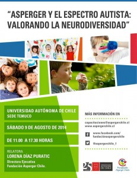

Participación de Asperger Chile en Congreso Nacional de Educadores Diferenciales

El pasado 4 de Septiembre, en el Salón de Convenciones del Hotel Enjoy, alrededor de mil profesores de Educación Diferencial de todo Chile se dieron cita para abordar distintas temáticas que son parte del quehacer educativo y de los desafíos que como Educadores, ya sea de Colegios con Proyectos de Integración o Escuelas Especiales debemos enfrentar.
Con la presencia de autoridades del MINEDUC, y de otras organizaciones de la Sociedad Civil, pudimos acercar a todos los profesores presentes a los temas que como padres y profesionales nos aquejan en materias de inclusión social de los estudiantes del espectro autista, con especial acento en el Síndrome de Asperger, que debido al desconocimiento aún presente en los colegios con proyectos de integración a nivel de aula común, aún sometidos a instancias de discriminación, a veces involuntaria otras veces ex profeso.
Agradecidos de la oportunidad de este Congreso de seguir trabajando en la difusión de las buenas prácticas educativas en el contexto del Espectro Autista.
Agradecimientos especiales a Aurora Espinoza Salas.
Jornada en Temuco: Sábado 9 de Agosto

Continuando con nuestra labor de difusión y formación de padres y profesionales vinculados al Espectro Autista, este Sábado 9 de Agosto nos trasladaremos a la capital de la Araucanía, para la Jornada “Asperger y el Espectro Autista: Valorando la Neurodiversidad”.
La cita, en esta ocasión, es en la Universidad Autónoma, ubicada en Av. Alemania #01090, pleno barrio Universitario de la ciudad de Temuco.
Valor General: 15.000 / Valor Estudiante: 10.000
Enviar correo a capacitaciones@aspergerchile.cl , (ASUNTO: TEMUCO) con los siguientes datos:
a) Nombre
b) Cédula de Identidad
c) Ocupación
d) Vínculo: (papá, mamá, terapeuta)
e) Fono contacto.
f) Comprobante de Depósito (si procede)
g) Copia certificado de alumno regular (estudiantes).
Transferencias o Depósito Directo a nombre de:
FUNDACIÓN ASPERGER CHILE
CUENTA CORRIENTE BANCO SANTANDER
66-75941-5
RUT: 65.053.412-3
correo de confirmación: capacitaciones@aspergerchile.cl
* EN CASO QUE LA TRANSFERENCIA SEA HECHA POR UN TERCERO, ESCRIBIR EL NOMBRE DEL ASISTENTE EN EL CAMPO “COMENTARIO”.
** EN CASO DE REQUERIR FACTURA, FAVOR SEÑALARLO AL MOMENTO DE ENVIAR EL CORREO Y ENVIAR TODOS LOS DATOS.
*** LOS CORREOS DE CONFIRMACIÓN DE INSCRIPCIÓN NO SON INMEDIATOS. FAVOR SER PACIENTES.
**** EN CASO DE DUDAS O CONSULTAS ESCRIBIR AL MISMO CORREO Y NO USAR OTRO MEDIO. (FACEBOOK NO NOTIFICA DE TODOS LOS MENSAJES).
10:00 A 10:45: ACREDITACIÓN
11.00 a 12:30: “Asperger en el Espectro Autista”.
• Fundamentos Históricos
• El Continuo Autista:
• Desde los Conceptos “Autismo” y “Asperger” , al Concepto de “Trastorno del Espectro Autista” (TEA)
• Triada de los Deterioros y Disfunciones Sensoriales
• Comorbilidad
• Conductas Compensatorias/adaptativas.
• Teoría de la Mente
• Función Ejecutiva
• Intervenciones
12:30 a 13:30: “Diagnóstico de niños con condiciones del Espectro Autista
Dra. Alexia Rattazzi (Pannacea-Argentina)
Modalidad Video-Conferencia.
13:30 a 14:30 Break
14:30 a 15:30: “Espectro Autista, más allá de la Infancia”
• Teoría de Coherencia Central
• Desarrollo de Habilidad ToM
• Construcción de Relaciones y sistemas de apoyo
• Cultura Asperger y Cultura Neurotípica
15:30 a 16:30 “Síndrome Mix: Principios generales de Tratamiento”
• TEA
• Integración Sensorial
• Síndrome Tourette
• Déficit Atencional
• Depresión
• Problemas de Aprendizaje
• Trastorno de Procesamiento Auditivo Central
• Adecuaciones curriculares y ambientales
16:30 a 17:00: Coffee Break
17:00 a 18:00: “Estrategias de Manejo Conductual en los TEA”
• Fundamentos Históricos
• Objetivos del Curriculum
• DTT (Discrete Trial Teaching)
• Pasos de la terapia o intervención.
• Los Padres
• Refuerzos
• Conductas disruptivas: ciclos de escalación; estrategias deescalación
18:00 a 18:30: Participación de CENTRO AGAPE TEMUCO
Taller de Habilidades Sociales. Obra de Teatro
Presenta: Elly Aravena, Directora Centro Ágape.
18:30 a 18:35: PALABRAS DE DESPEDIDA.